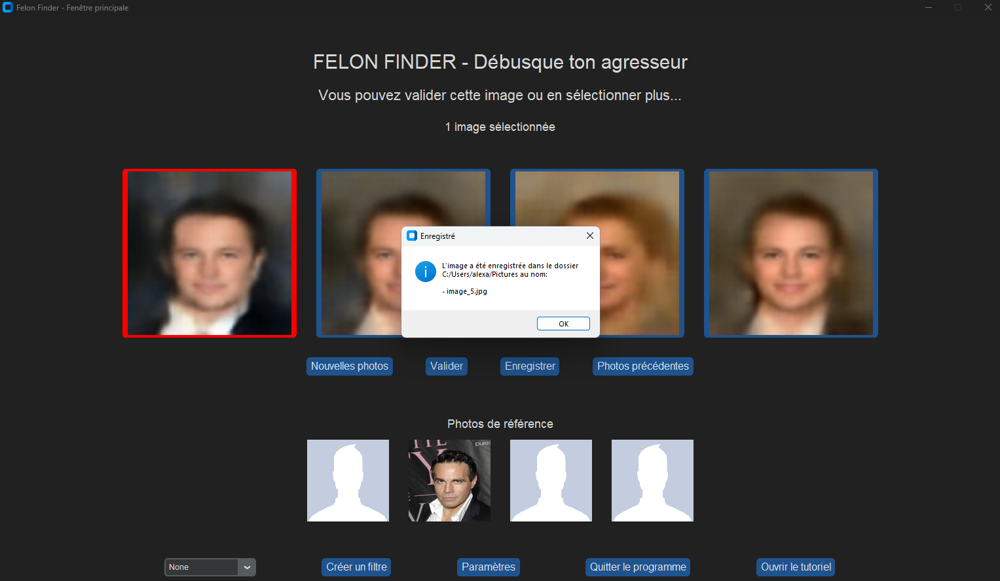
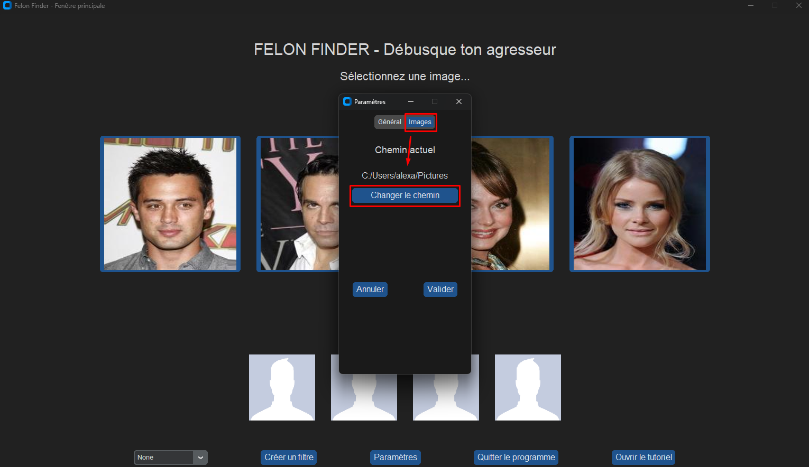
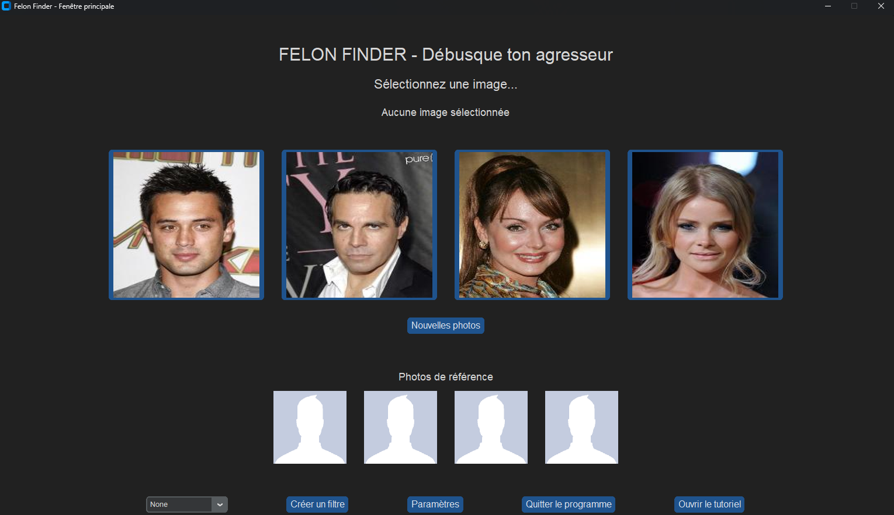

Questions & Answers
Using the software
Selecting images and letting the algorithm do its magic
The first intent of Felon Finder is to let you find a composite sketch of a potential assailant according to what you remember.
The most important function of Felon Finder is its algorithm: you only have to get random images until you get to someone that looks like the potential assailant. Once you get there, you can select one or more pictures that correpond to this person and validate your choice.

Not satisfied yet ? You can use the button “Rafraîchir” to keep reusing the algorithm on the same reference picture, in case the randomness did not please you enough.

Saving one or more images
Once you are happy with one or more of the showed pictures, you can save them in a path you choose yourself (everything is made simple through the software, don’t worry !).

Then :
{kind=link}
Note that you always can change the path where your images are saved through the “Paramètres” menu, doing so :
{kind=link}
Back-tracking
If you realize you went to fast through the pictures, you always can come back to the last you saw. You can do this with the “Photos précédentes” button.

You can even come back to the very first pictures !
{kind=link}
Changing the parameters
Whether you want to tweak the parameters for fun, want to experiment with a higher variance for the algorithm, or want to switch between light and dark mode for the software, everything is possible in the options menu.

Using the “Réinitialiser” button permits going back to the default parameters anyway, so don’t be afraid to try a higher mean or a lower variance !
Filters
WIP